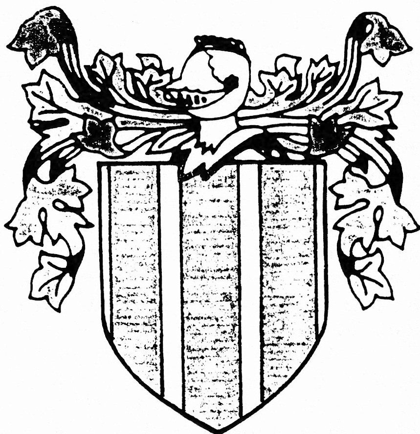

Part III - Lessard Family History
History of Lessart Name
LESSART - variation (LESSARD)
The following definitions are given:
- essart - land cleared by burning the small bushes
terre défrichée par essartage
- if a more exact translation is desired. - Lessard - a locality in Calvados (Normandy, France)
* * * * *
The following has been taken from The Meaning of Your Name written by Mary Rattray, a leaflet enclosed with the Coat of Arms Report on Lessard, obtained from Medieval Coat of Arms (Saskatoon) with Head Office in Vancouver, B.C.:
Surnames, generally, can be divided into four categories:
- Place Names which would denote the location from which a person’s name came as in the second definition listed above.
- Occupational Names which pertain to office, rank or trade.
- Descriptive Names which describe physical characteristics, or relationships, such as condition in life appearance, dress and colouring.
- Kinship Names which are derived from the name of the name of the father. The patronymical surname is common in many forms to all countries, thus in England the son of John became Johnson.
All things are engaged in writing their history.
The planet, the pebble, goes attended by its shadow.
The rolling rock leaves its scratches on the mountain; the river, its channel in the soil; the animal, its bones in the stratum; the fern and leaf, their modest epitaph in the coal.
The falling drop makes its sculpture in the sand or the stone.
Not a footstep into the snow, or along the ground, but prints, in characters more or less lasting, a map of its march.
Emerson
Footsteps In Time

LESSARD COAT OF ARMS REPORT
The Coat of Arms was completed by a heraldic artist, from information that was researched in:
Riestaps Armorial General - Normandy, France.
The Coat of Arms (shield) is described heraldically as:
Azure, three pales azure.
The crest is the small decoration which appears above the shield and helmet:
None recorded.
Family mottoes may refer to family exploits or past family history, others refer to the shield, crest or badge device and others are a play upon the name of the holders, started in the distant past as battle cries. The motto for this name is:
None recorded.
Names for individuals originated as a way of identification and they usually fall into four categories (see supplement sheet). Dictionaries of surnames indicates surnames may have different spellings from the original.
The individual meanings for some names are obscure, but for others it is self explanatory and understandable.
Medieval Coats of Arms (Saskatoon)
Market Mall S7J 2G2